import pandas as pd
import seaborn as sns
import matplotlib.pyplot as plt
import numpy as np
url = 'https://raw.githubusercontent.com/Auslum/scikit_learn_survey/refs/heads/main/scikit-learn-survey-master-dataset.csv'
df = pd.read_csv(url)
#print(df.head())
Question #2¶
# Scikit-learn logo colors (blue and orange)
scikit_learn_colors = ["#0072B2", "#FF9900"]
# Generate a color interpolation for the priority levels
priority_colors = [
mcolors.to_hex(c)
for c in mcolors.LinearSegmentedColormap.from_list("ScikitLearn", scikit_learn_colors)(np.linspace(0, 1, len(priority_levels)))
]
# Filter the columns related to the question
priority_columns = [col for col in df.columns if "PROJECT FUTURE DIRECTION AND PRIORITIES" in col]
priority_data = df[priority_columns].dropna()
# Rename the categories
renamed_columns = [
"Performance", "Reliability", "Packaging", "New features",
"Technical documentation", "Educational materials",
"Website redesign", "Other"
]
priority_data.columns = renamed_columns
# Prepare data for a stacked bar chart
stacked_bar_data = pd.DataFrame({
category: priority_data[category].value_counts().sort_index()
for category in renamed_columns
}).fillna(0).astype(int).T
priority_levels = [int(level) for level in stacked_bar_data.columns]
categories = stacked_bar_data.index
# Create the stacked bar chart
plt.figure(figsize=(12, 6))
bottoms = np.zeros(len(categories))
for level, color in zip(priority_levels, priority_colors):
plt.bar(categories, stacked_bar_data[level], bottom=bottoms, label=f'Priority {level}', color=color)
bottoms += stacked_bar_data[level]
# Customize the chart
plt.title("PROJECT FUTURE DIRECTION AND PRIORITIES", fontsize=14, fontweight='bold')
plt.xlabel("Categories")
plt.ylabel("Frequency")
plt.xticks(rotation=45, ha='right')
# Customize the legend with explanations
priority_labels = [
"1 (Lowest Priority)", "2", "3", "4", "5", "6", "7 (Highest Priority)"
]
plt.legend(
labels=priority_labels,
title="Level of Priority", bbox_to_anchor=(1.05, 1), loc="upper left", fontsize=10
)
# Adjust and display the chart
plt.tight_layout()
plt.show()
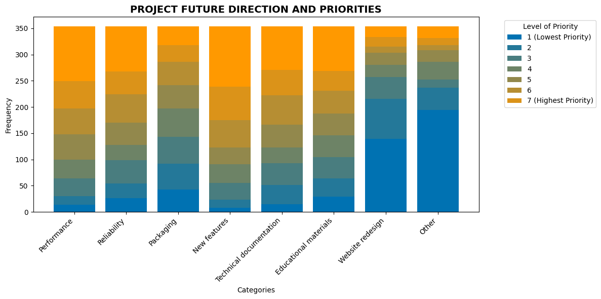
# Spider chart
# Prepare data for calculation of weighted averages
stacked_bar_data = pd.DataFrame({
category: priority_data[category].value_counts().sort_index()
for category in renamed_columns
}).fillna(0).astype(int).T
# Calculate weighted averages for each category
priority_levels = np.array([1, 2, 3, 4, 5, 6, 7, 8])
weighted_scores = (stacked_bar_data * priority_levels).sum(axis=1) / stacked_bar_data.sum(axis=1)
# Verify new data
# print("Weighted averages per category:\n", weighted_scores)
# Prepare the spider chart
labels = weighted_scores.index
values = weighted_scores.values
num_vars = len(labels)
# Ensure that the graph is closed (the first value is repeated at the end)
angles = np.linspace(0, 2 * np.pi, num_vars, endpoint=False).tolist()
values = np.concatenate((values, [values[0]]))
angles += angles[:1]
# Create the spider chart
fig, ax = plt.subplots(figsize=(8, 8), subplot_kw=dict(polar=True))
ax.fill(angles, values, color='blue', alpha=0.25)
ax.plot(angles, values, color='blue', linewidth=2)
# Adjust the tags
ax.set_yticks([])
ax.set_xticks(angles[:-1])
ax.set_xticklabels(labels, fontsize=10)
ax.set_title("PROJECT FUTURE DIRECTION AND PRIORITIES", fontsize=14, fontweight='bold', pad=20)
# Show the chart
plt.tight_layout()
plt.show()
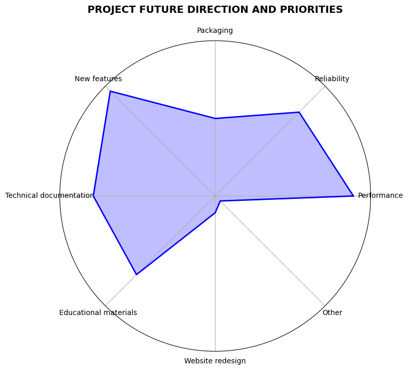
Question #5¶
# Scikit-learn logo colors (blue and orange)
scikit_learn_colors = ["#0072B2", "#FF9900"]
# Generate a color interpolation for the priority levels
priority_colors = [
mcolors.to_hex(c)
for c in mcolors.LinearSegmentedColormap.from_list("ScikitLearn", scikit_learn_colors)(np.linspace(0, 1, len(priority_levels)))
]
# Identify the columns related to the question about priorities for ML tasks
ml_task_columns = [
col for col in df.columns
if "Please order the following ML tasks in order of priority to you" in col
]
# Filter relevant data
ml_task_data = df[ml_task_columns].dropna()
# Rename columns
renamed_ml_task_columns = [
"Regression", "Classification", "Forecasting",
"Outlier/anomaly detection", "Dimensionality reduction",
"Clustering", "Other"
]
ml_task_data.columns = renamed_ml_task_columns
# Stacked bar chart
# Reindex with available priority levels (1 to 7)
priority_levels = [1, 2, 3, 4, 5, 6, 7]
# Prepare data for the stacked bar chart
stacked_bar_data = pd.DataFrame({
category: ml_task_data[category].value_counts().reindex(priority_levels, fill_value=0)
for category in ml_task_data.columns
}).T
# Create the stacked bar chart
plt.figure(figsize=(12, 6))
bottoms = np.zeros(len(stacked_bar_data))
# Loop through priority levels and apply custom colors
for level, color in zip(priority_levels, priority_colors):
plt.bar(stacked_bar_data.index, stacked_bar_data[level], bottom=bottoms, label=f'Priority {level}', color=color)
bottoms += stacked_bar_data[level]
# Customize the chart
plt.title("ML Tasks: Priority Levels", fontsize=14, fontweight='bold')
plt.xlabel("Categories")
plt.ylabel("Number of Responses")
priority_labels = [
"1 (Lowest Priority)", "2", "3", "4", "5", "6", "7 (Highest Priority)"
]
plt.legend(
labels=priority_labels,
title="Priority Level", bbox_to_anchor=(1.05, 1), loc="upper left", fontsize=10
)
# Rotate category labels and adjust layout
plt.xticks(rotation=45, ha='right')
plt.tight_layout()
plt.show()
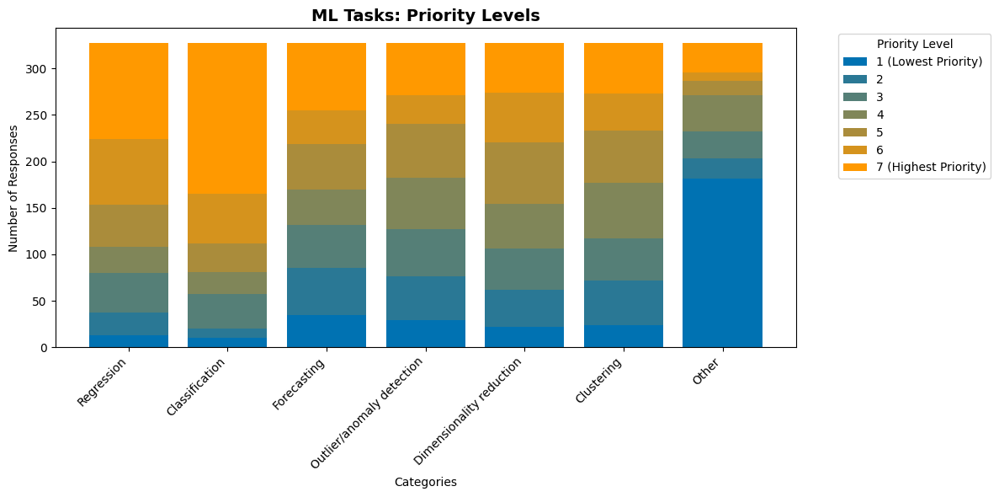
# Spider chart
# Count the responses of each priority level for each category
priority_levels = np.array([1, 2, 3, 4, 5, 6, 7])
stacked_bar_data = pd.DataFrame({
category: ml_task_data[category].value_counts().sort_index()
for category in renamed_ml_task_columns
}).fillna(0).astype(int).T
# Calculate weighted averages for each category
weighted_scores = (stacked_bar_data * priority_levels).sum(axis=1) / stacked_bar_data.sum(axis=1)
# Verify weighted averages
#print("Weighted averages per category:\n", weighted_scores)
# Prepare data for the spider chart
labels = weighted_scores.index
values = weighted_scores.values
num_vars = len(labels)
# Make sure the chart closes (first value repeats at the end)
angles = np.linspace(0, 2 * np.pi, num_vars, endpoint=False).tolist()
values = np.concatenate((values, [values[0]]))
angles += angles[:1]
# Create the spider chart
fig, ax = plt.subplots(figsize=(8, 8), subplot_kw=dict(polar=True))
ax.fill(angles, values, color='orange', alpha=0.25)
ax.plot(angles, values, color='darkorange', linewidth=2)
# Adjust the tags and the title
ax.set_yticks([])
ax.set_xticks(angles[:-1])
ax.set_xticklabels(labels, fontsize=10)
ax.set_title("ML Tasks: Priority Levels", fontsize=14, fontweight='bold', pad=20)
# Show the chart
plt.tight_layout()
plt.show()
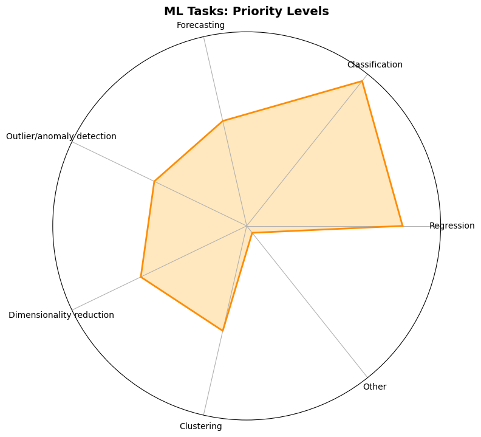
Question #6¶
def plot_response_counts2(df, column_name, mapping_dict, title, color, y_ax_name):
"""
General function to plot response counts for survey questions with multiple answers.
Parameters:
df (DataFrame): The survey data.
column_name (str): The column name containing the responses.
mapping_dict (dict): Dictionary mapping responses in various languages to English categories.
title (str): The title for the graph.
color (str): The color of the bars.
y_ax_name (str): Label for the y-axis.
"""
# Function to normalize responses using the mapping dictionary
def normalize_responses(response):
if isinstance(response, str):
# Split the responses by comma, strip extra spaces, and map to English categories
response_split = [r.strip() for r in response.split(',')]
normalized = [mapping_dict.get(r, None) for r in response_split]
# Filter out None values (unmapped responses)
return [r for r in normalized if r is not None]
return []
# Apply the normalization to the responses
df['Normalized_Responses'] = df[column_name].apply(normalize_responses)
# Flatten the normalized response lists
all_responses = [item for sublist in df['Normalized_Responses'].dropna() for item in sublist]
# Count the answers and show the number of times each option is chosen
response_counts = pd.Series(all_responses).value_counts()
# Sort the responses from largest to smallest
response_counts = response_counts.sort_values(ascending=True)
# Create the horizontal bar chart
plt.figure(figsize=(14, 6))
ax = response_counts.plot(kind='barh', color=color)
# Add data tags
for index, value in enumerate(response_counts):
ax.text(value + 2, index, str(value), va='center', ha='left', fontsize=12, fontweight='regular')
# Title and labels
plt.title(title, fontsize=16, fontweight='bold')
plt.xlabel('Number of Responses', fontsize=12)
plt.ylabel(y_ax_name, fontsize=12)
# Adjust and show the chart
plt.tight_layout()
plt.show()
mapping_dict = {
# Confusion matrix responses
"Confusion matrix": "Confusion matrix",
"Matriz de confusão": "Confusion matrix",
"Matriz de confusión": "Confusion matrix",
"混淆矩阵": "Confusion matrix",
"Matrice de confusion": "Confusion matrix",
"مصفوفة الدقة": "Confusion matrix",
# Reliability diagram responses
"Reliability diagram": "Reliability diagram",
"Diagrama de confiabilidade": "Reliability diagram",
"Diagrama de confiabilidad": "Reliability diagram",
"可靠性图": "Reliability diagram",
"Diagramme de fiabilité": "Reliability diagram",
"مخطط الموثوقية": "Reliability diagram",
# ROC curve responses
"ROC curve": "ROC curve",
"Curva ROC": "ROC curve",
"ROC曲线": "ROC curve",
"Courbe ROC": "ROC curve",
"منحنى ROC": "ROC curve",
# Precision-Recall curve responses
"Precision-Recall curve": "Precision-Recall curve",
"Curva de Precisão-Recall": "Precision-Recall curve",
"Curva de Precisión-Recall": "Precision-Recall curve",
"PR曲线（精确率-召回率曲线）": "Precision-Recall curve",
"Courbe Précision-Rappel": "Precision-Recall curve",
"منحنى الدقة-الاسترجاع": "Precision-Recall curve",
# Feature importance responses
"Feature importance": "Feature importance",
"Importância das características": "Feature importance",
"Importancia de variables": "Feature importance",
"特征重要性": "Feature importance",
"Importance des caractéristiques (features)": "Feature importance",
"الأهمية النسبية للخواص": "Feature importance",
# Residual plots responses
"Residual plots": "Residual plots",
"Gráficos de resíduos": "Residual plots",
"Gráficos de residuos": "Residual plots",
"残差图": "Residual plots",
"Graphiques des résidus": "Residual plots",
"مخططات البواقي": "Residual plots",
# Learning curves responses
"Learning curves": "Learning curves",
"Curvas de aprendizagem": "Learning curves",
"Curvas de aprendizaje": "Learning curves",
"学习曲线": "Learning curves",
"Courbes d'apprentissage": "Learning curves",
"منحنيات التعلم": "Learning curves",
# Other responses
"Other": "Other",
"Outro": "Other",
"Otro": "Other",
"其它": "Other",
"Autre": "Other",
"أخرى": "Other"
}
plot_response_counts2(
df=df,
column_name='What visualizations do you use to evaluate your models? Select all that apply.',
mapping_dict=mapping_dict,
title='Visualizations used to evaluate models',
color='green',
y_ax_name='Visualizations'
)
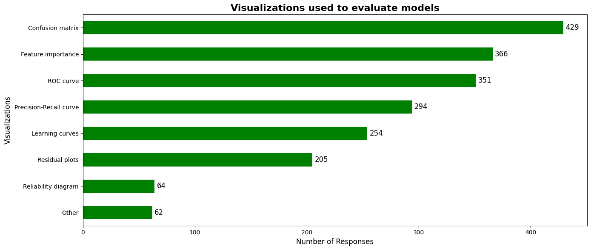
Question #7¶
mapping_dict = {
# cudf responses
"cudf": "cudf",
"cuDF كووديف": "cudf",
# Dask DataFrame responses
"Dask DataFrame": "Dask DataFrame",
"Dask 数据框": "Dask DataFrame",
"Dask DataFrame اطر بيانات داسك": "Dask DataFrame",
# DuckDB responses
"DuckDB": "DuckDB",
"DuckDB دك دي بي": "DuckDB",
# Modin responses
"Modin": "Modin",
"Modin مودين": "Modin",
# pandas responses
"pandas": "pandas",
"Pandas": "pandas",
"pandas بنداز": "pandas",
# Polars responses
"Polars": "Polars",
"Polars بولارز": "Polars",
# Spark DataFrame responses
"Spark DataFrame": "Spark DataFrame",
"Spark 数据框": "Spark DataFrame",
"Spark DataFrame اطر بيانات سبارك": "Spark DataFrame",
# Other responses
"Other": "Other",
"Outro": "Other",
"Otro": "Other",
"其它": "Other",
"Autre": "Other",
"أخرى": "Other"
}
plot_response_counts2(
df=df,
column_name='Which DataFrame libraries do you use? Select all that apply.',
mapping_dict=mapping_dict,
title='DataFrame libraries used',
color='blue',
y_ax_name='Libraries'
)
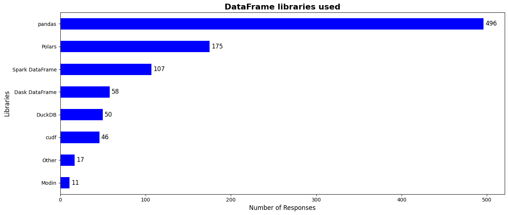
Question #9¶
mapping_dict = {
# CatBoost responses
"CatBoost": "CatBoost",
"CatBoost كات بوست": "CatBoost",
# Jax responses
"Jax": "Jax",
"JAX چاكس": "Jax",
# Keras responses
"Keras": "Keras",
"Keras كيراس": "Keras",
# LightGBM responses
"LightGBM": "LightGBM",
"LightGBM لايت جي بي ام": "LightGBM",
# PyTorch responses
"PyTorch": "PyTorch",
"PyTorch باي تورش": "PyTorch",
# Transformers responses
"Transformers": "Transformers",
"Transformers المحولات (ترانسفورمرز)": "Transformers",
# XGBoost responses
"XGBoost": "XGBoost",
"XGBoost اكس جي بوست": "XGBoost",
# Other responses
"Other": "Other",
"Outro": "Other",
"Otro": "Other",
"其它": "Other",
"Autre": "Other",
"أخرى": "Other"
}
plot_response_counts2(
df=df,
column_name='Which other Machine Learning libraries do you use? Select all that apply.',
mapping_dict=mapping_dict,
title='Machine Learning libraries used',
color='orange',
y_ax_name='Libraries'
)
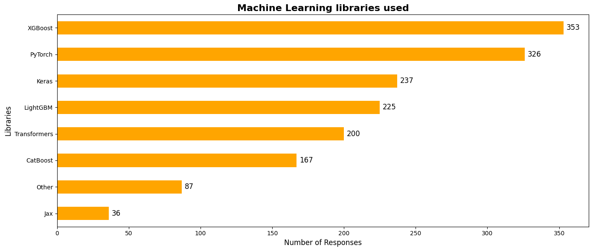
Question #10¶
mapping_dict = {
# LogisticRegression responses
"LogisticRegression": "LogisticRegression",
"RandomForestClassifier أو RandomForestRegressorLogisticRegression الانحدار اللوجستي": "LogisticRegression",
# RandomForestClassifier or RandomForestRegressor responses
"RandomForestClassifier or RandomForestRegressor": "RandomForestClassifier or RandomForestRegressor",
"RandomForestClassifier ou RandomForestRegressor": "RandomForestClassifier or RandomForestRegressor",
"RandomForestClassifier o RandomForestRegressor": "RandomForestClassifier or RandomForestRegressor",
"RandomForestClassifier 或 RandomForestRegressor": "RandomForestClassifier or RandomForestRegressor",
"مصنف الغابة العشوائية أو انحدار الغابة العشوائية": "RandomForestClassifier or RandomForestRegressor",
# HistGradientBoostingRegressor or HistGradientBoostingClassifier responses
"HistGradientBoostingRegressor or HistGradientBoostingClassifier": "HistGradientBoostingRegressor or HistGradientBoostingClassifier",
"HistGradientBoostingRegressor ou HistGradientBoostingClassifier": "HistGradientBoostingRegressor or HistGradientBoostingClassifier",
"HistGradientBoostingRegressor o HistGradientBoostingClassifier": "HistGradientBoostingRegressor or HistGradientBoostingClassifier",
"HistGradientBoostingRegressor 或 HistGradientBoostingClassifier": "HistGradientBoostingRegressor or HistGradientBoostingClassifier",
"HistGradientBoostingRegressorأو HistGradientBoostingClassifier مصنف الانحدار المدعم بتحليل التردد أو شجرة الانحدار المدعمة بتحليل التردد</li>": "HistGradientBoostingRegressor or HistGradientBoostingClassifier",
# Pipeline responses
"Pipeline": "Pipeline",
"Pipeline الوصلات \ خطوط الأنابيب": "Pipeline",
# ColumnTransformer responses
"ColumnTransformer": "ColumnTransformer",
"ColumnTransforme محولات الاعمدة": "ColumnTransformer",
# Other responses
"Other": "Other",
"Outro": "Other",
"Otro": "Other",
"其它": "Other",
"Autre": "Other",
"أخرى": "Other"
}
plot_response_counts2(
df=df,
column_name='Which estimators do you regularly use? Select all that apply.',
mapping_dict=mapping_dict,
title='Estimators Regularly Used',
color='purple',
y_ax_name='Estimators'
)
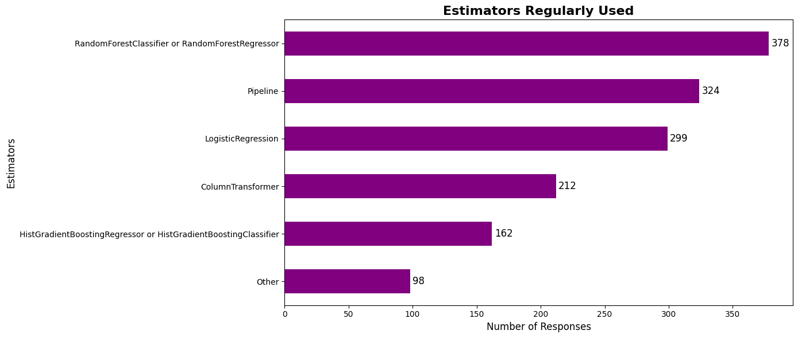
Question #11¶
# Define the relevant question
question_column = "What ML features are important for your use case? Select all that apply."
# Check if the column exists in the dataset
if question_column in data.columns:
# Count occurrences of each response
response_counts = data[question_column].value_counts()
# Sort responses in the desired order
response_order = [
"Calibration of probabilistic classifiers",
"Calibration of regressors",
"Uncertainty estimates for prediction",
"Cost-sensitive learning",
"Feature importances",
"Sample weights",
"Metadata routing",
"Non-euclidean metrics"
]
response_counts = response_counts.reindex(response_order, fill_value=0)
# Plot the bar graph
plt.figure(figsize=(12, 8))
response_counts.plot(kind='bar', color='purple')
# Add titles and labels
plt.title("Responses to the Importance of Open Source ML/AI Frameworks", fontsize=14, fontweight="bold")
plt.xlabel("Response", fontsize=12)
plt.ylabel("Number of Respondents", fontsize=12)
plt.xticks(rotation=45, ha='right')
# Annotate the bars
for i, count in enumerate(response_counts):
plt.text(i, count + 0.5, str(count), ha='center', fontsize=10)
# Show the plot
plt.tight_layout()
plt.show()
else:
print(f"Column '{question_column}' not found in the dataset.")
---------------------------------------------------------------------------
NameError Traceback (most recent call last)
<ipython-input-2-004fd5385b31> in <cell line: 5>()
3
4 # Check if the column exists in the dataset
----> 5 if question_column in data.columns:
6 # Count occurrences of each response
7 response_counts = data[question_column].value_counts()
NameError: name 'data' is not defined
Question #12¶
# Extract responses to the question
question_column = "Is there additional information you want to pass to an estimator that is not X and Y?"
if question_column in data.columns:
response_counts = data[question_column].value_counts()
# Plot the bar graph
plt.figure(figsize=(8, 6))
response_counts.plot(kind='bar', color=['teal', 'orange'], )
# Add titles and labels
plt.title("Responses to Additional Information for Estimator (X and Y)", fontsize=14, fontweight='bold')
plt.xlabel("Response", fontsize=12)
plt.ylabel("Count", fontsize=12)
# Annotate bars
for i, count in enumerate(response_counts):
plt.text(i, count + 0.5, str(count), ha='center', fontsize=10)
# Show the plot
plt.tight_layout()
plt.show()
else:
print(f"Column '{question_column}' not found in the dataset.")
<ipython-input-2-4e9caf66db91>:20: UserWarning: Glyph 21542 (\N{CJK UNIFIED IDEOGRAPH-5426}) missing from current font.
plt.tight_layout()
<ipython-input-2-4e9caf66db91>:20: UserWarning: Glyph 26159 (\N{CJK UNIFIED IDEOGRAPH-662F}) missing from current font.
plt.tight_layout()
/usr/local/lib/python3.10/dist-packages/IPython/core/pylabtools.py:151: UserWarning: Glyph 21542 (\N{CJK UNIFIED IDEOGRAPH-5426}) missing from current font.
fig.canvas.print_figure(bytes_io, **kw)
/usr/local/lib/python3.10/dist-packages/IPython/core/pylabtools.py:151: UserWarning: Glyph 26159 (\N{CJK UNIFIED IDEOGRAPH-662F}) missing from current font.
fig.canvas.print_figure(bytes_io, **kw)
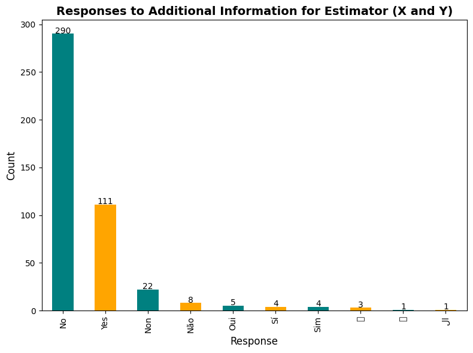
Question #15¶
#print(df.head())
# Identify the columns related to the question about priorities for Deployment
deployment_columns = [
col for col in df.columns
if "Considering your current machine learning projects, how critical would GPU capabilities within scikit-learn be?" in col
]
# print("Identified columns for Deployment:\n",deploy_columns)
# Filter relevant data
deploy_data = df[deployment_columns].dropna()
# Rename columns
renamed_deploy_columns = [
""
]
deploy_data.columns = renamed_deploy_columns
# Stacked bar chart
# Reindex with available priority levels (1 to 5)
priority_levels = [1, 2, 3, 4, 5]
# Prepare data for the stacked bar chart
stacked_bar_data = pd.DataFrame({
category: deploy_data[category].value_counts().reindex(priority_levels, fill_value=0)
for category in deploy_data.columns
}).T
# Print to verify processed data
#print("\nPrepared data for the stacked bar chart:")
#print(stacked_bar_data)
# Create the stacked bar chart
stacked_bar_data.plot(
kind="bar", stacked=True, figsize=(12, 6), colormap="viridis", edgecolor="none"
)
plt.title("Deployment: Priority Levels", fontsize=14, fontweight='bold')
plt.xlabel("")
plt.ylabel("Number of Responses")
plt.legend(
title="Priority Level", bbox_to_anchor=(1.05, 1), loc="upper left", fontsize=10
)
plt.xticks(rotation=45, ha='right')
plt.tight_layout()
plt.show()
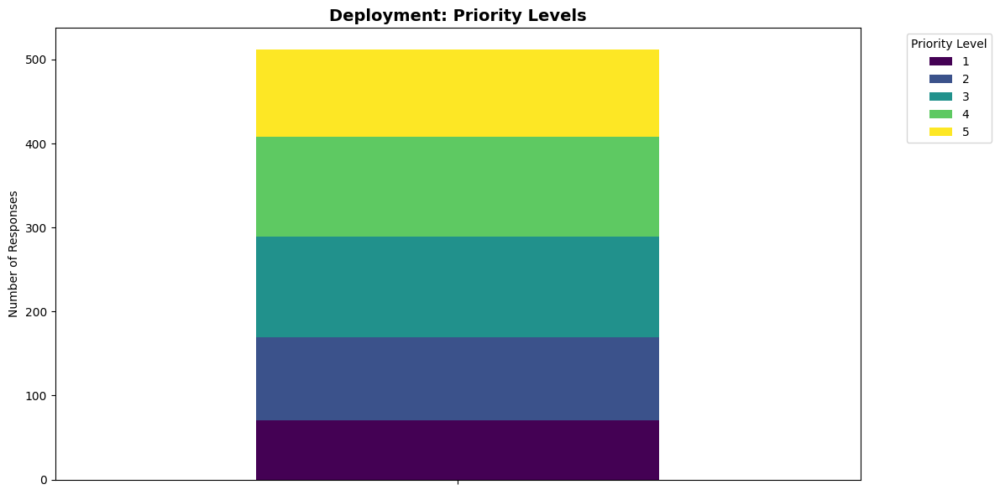
Question #16¶
# Define the relevant question
question_column = "For model registry and experiment tracking, do you use any of the following tools? Select all that apply."
# Check if the column exists in the dataset
if question_column in data.columns:
# Count occurrences of each response
response_counts = data[question_column].value_counts()
# Sort responses in the desired order
response_order = [
"DVC",
"Neptune",
"MlFlow",
"Weight and biases",
"Custom tool",
"Other"
]
response_counts = response_counts.reindex(response_order, fill_value=0)
# Plot the bar graph
plt.figure(figsize=(12, 8))
response_counts.plot(kind='bar', color='green')
# Add titles and labels
plt.title("Responses to the Importance of Open Source ML/AI Frameworks", fontsize=14, fontweight="bold")
plt.xlabel("Response", fontsize=12)
plt.ylabel("Number of Respondents", fontsize=12)
plt.xticks(rotation=45, ha='right')
# Annotate the bars
for i, count in enumerate(response_counts):
plt.text(i, count + 0.5, str(count), ha='center', fontsize=10)
# Show the plot
plt.tight_layout()
plt.show()
else:
print(f"Column '{question_column}' not found in the dataset.")
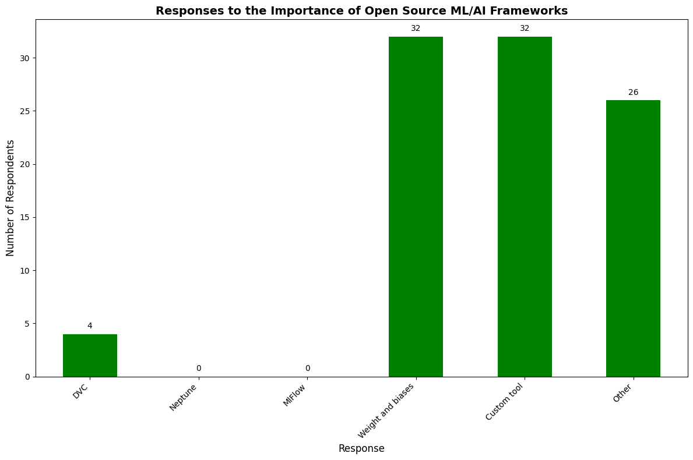
Question #17¶
# Define the relevant question
question_column = "For scheduling, do you use any of the following tools? Select all that apply."
# Check if the column exists in the dataset
if question_column in data.columns:
# Count occurrences of each response
response_counts = data[question_column].value_counts()
# Sort responses in the desired order
response_order = [
"Airflow",
"Argo",
"Coiled",
"Dagster",
"Kubeflow",
"Metaflow (outerbounds)",
"Custom tool",
"Other"
]
response_counts = response_counts.reindex(response_order, fill_value=0)
# Plot the pie chart
plt.figure(figsize=(15, 15))
plt.pie(response_counts, labels=response_counts.index, autopct='%1.1f%%', startangle=90, colors=plt.cm.Paired.colors)
# Add title
plt.title("Responses to the Importance of Open Source ML/AI Features", fontsize=14, fontweight="bold")
# Show the plot
plt.axis('equal') # Equal aspect ratio ensures that pie chart is drawn as a circle.
plt.tight_layout()
plt.show()
else:
print(f"Column '{question_column}' not found in the dataset.")
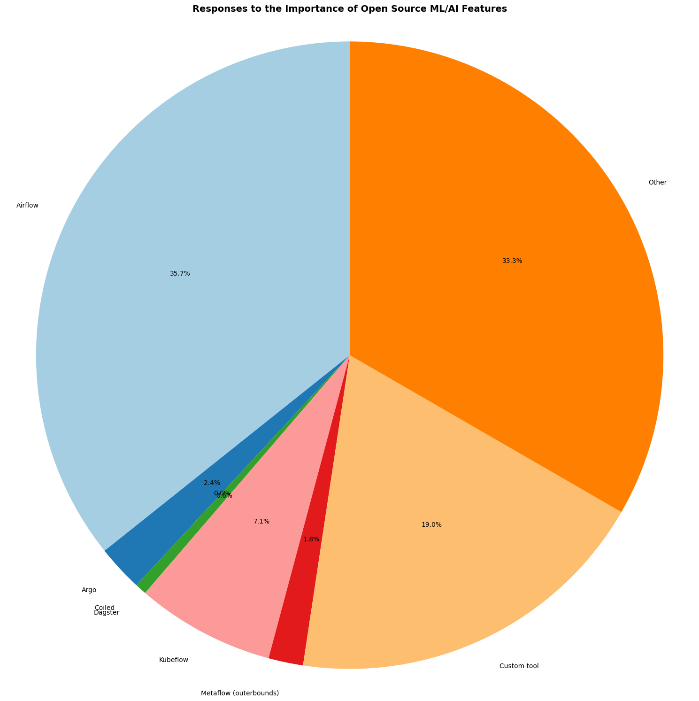
# Define the relevant question
question_column = "For scheduling, do you use any of the following tools? Select all that apply."
# Check if the column exists in the dataset
if question_column in data.columns:
# Count occurrences of each response
response_counts = data[question_column].value_counts()
# Sort responses in the desired order
response_order = [
"Airflow",
"Argo",
"Coiled",
"Dagster",
"Kubeflow",
"Metaflow (outerbounds)",
"Custom tool",
"Other"
]
response_counts = response_counts.reindex(response_order, fill_value=0)
# Plot the bar graph
plt.figure(figsize=(12, 8))
response_counts.plot(kind='bar', color='orange')
# Add titles and labels
plt.title("Responses to the Importance of Open Source ML/AI Frameworks", fontsize=14, fontweight="bold")
plt.xlabel("Response", fontsize=12)
plt.ylabel("Number of Respondents", fontsize=12)
plt.xticks(rotation=45, ha='right')
# Annotate the bars
for i, count in enumerate(response_counts):
plt.text(i, count + 0.5, str(count), ha='center', fontsize=10)
# Show the plot
plt.tight_layout()
plt.show()
else:
print(f"Column '{question_column}' not found in the dataset.")
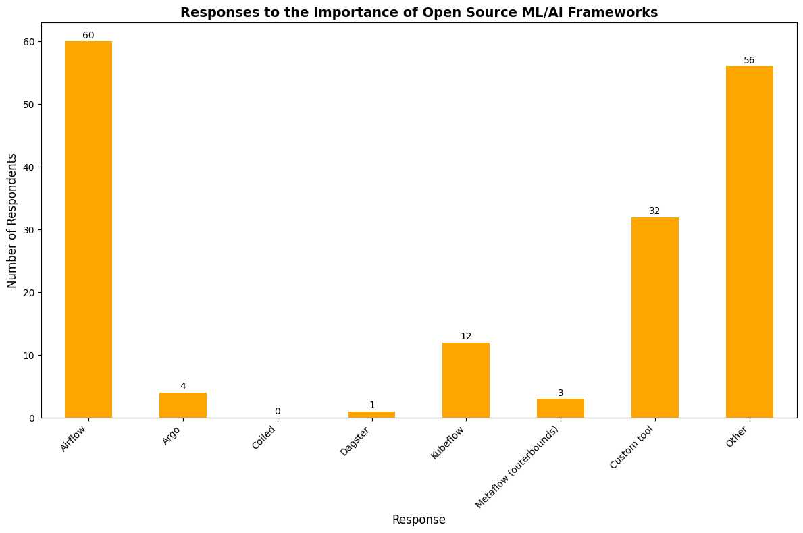
Question #18¶
# Define the relevant question
question_column = "How long does a typical model training take in your ML projects?"
# Check if the column exists in the dataset
if question_column in data.columns:
# Count occurrences of each response
response_counts = data[question_column].value_counts()
# Sort responses in the desired order
response_order = [
"less than 10 seconds",
"less than a minute",
"less than 10 minutes",
"less than an hour",
"less than a day",
"more than a day",
]
response_counts = response_counts.reindex(response_order, fill_value=0)
# Plot the bar graph
plt.figure(figsize=(12, 8))
response_counts.plot(kind='bar', color='blue')
# Add titles and labels
plt.title("Responses to the Importance of Open Source ML/AI Frameworks", fontsize=14, fontweight="bold")
plt.xlabel("Response", fontsize=12)
plt.ylabel("Number of Respondents", fontsize=12)
plt.xticks(rotation=45, ha='right')
# Annotate the bars
for i, count in enumerate(response_counts):
plt.text(i, count + 0.5, str(count), ha='center', fontsize=10)
# Show the plot
plt.tight_layout()
plt.show()
else:
print(f"Column '{question_column}' not found in the dataset.")
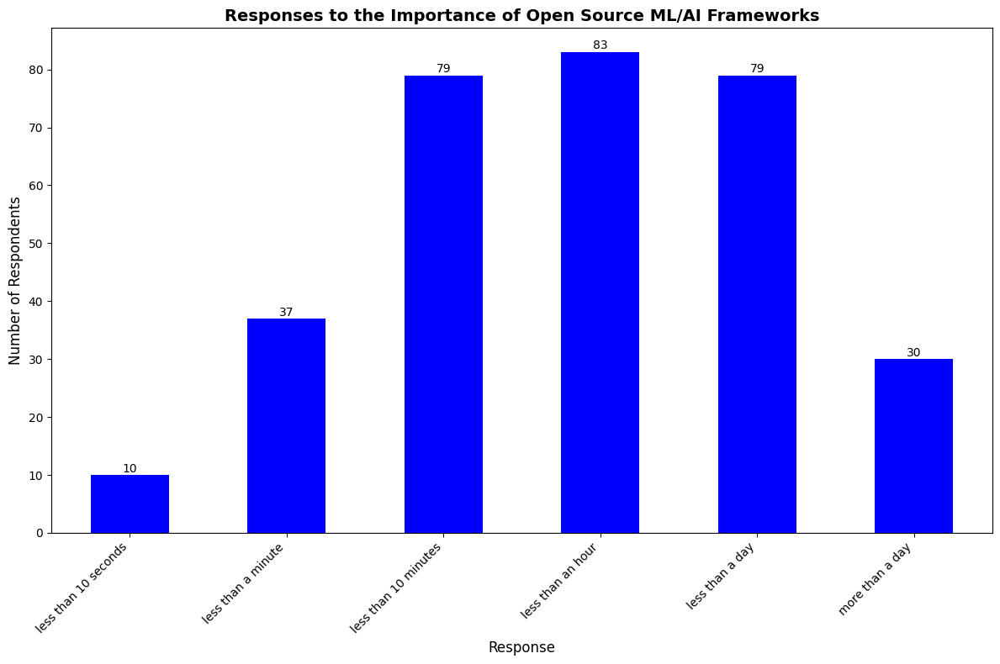
# Define the relevant question
question_column = "How long does a typical model training take in your ML projects?"
# Check if the column exists in the dataset
if question_column in data.columns:
# Count occurrences of each response
response_counts = data[question_column].value_counts()
# Sort responses in the desired order
response_order = [
"less than 10 seconds",
"less than a minute",
"less than 10 minutes",
"less than an hour",
"less than a day",
"more than a day",
]
response_counts = response_counts.reindex(response_order, fill_value=0)
# Plot the pie chart
plt.figure(figsize=(15, 15))
plt.pie(response_counts, labels=response_counts.index, autopct='%1.1f%%', startangle=90, colors=plt.cm.Paired.colors)
# Add title
plt.title("Responses to the Importance of Open Source ML/AI Features", fontsize=14, fontweight="bold")
# Show the plot
plt.axis('equal') # Equal aspect ratio ensures that pie chart is drawn as a circle.
plt.tight_layout()
plt.show()
else:
print(f"Column '{question_column}' not found in the dataset.")
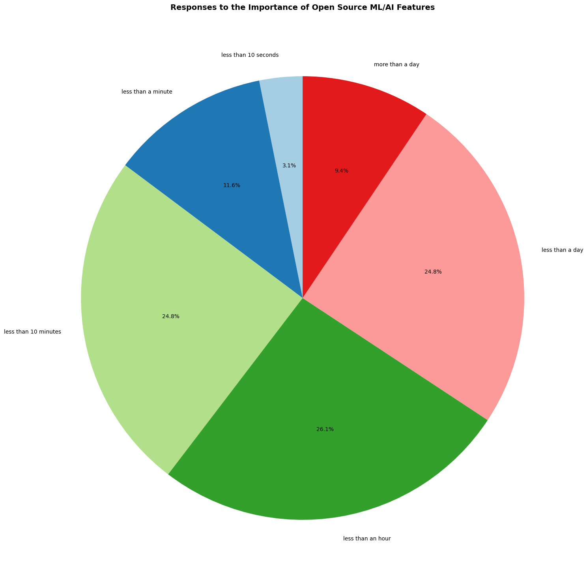
Question #19¶
#print(df.head())
# Identify the columns related to the question about priorities for Deployed Models
deployed_models_columns = [
col for col in df.columns
if "How many deployed models are you (and your team) currently maintaining?" in col
]
# print("Identified columns for Deployed Models:\n",deploy_columns)
# Filter relevant data
deployed_data = df[deployed_models_columns].dropna()
# Rename columns
renamed_deployed_columns = [
""
]
deployed_data.columns = renamed_deployed_columns
# Stacked bar chart
# Reindex with available priority levels (1 to 5 and more than 5)
priority_levels = [1, 2, 3, 4, 5, float('inf')] # [1, 2, 3, 4, 5, >5]
# Prepare data for the stacked bar chart
stacked_bar_data = pd.DataFrame({
category: deployed_data[category].value_counts().reindex(priority_levels, fill_value=0)
for category in deployed_data.columns
}).T
# Print to verify processed data
#print("\nPrepared data for the stacked bar chart:")
#print(stacked_bar_data)
# Create the stacked bar chart
stacked_bar_data.plot(
kind="bar", stacked=True, figsize=(12, 6), colormap="viridis", edgecolor="none"
)
plt.title("Deployment: Priority Levels", fontsize=14, fontweight='bold')
plt.xlabel("")
plt.ylabel("Number of Responses")
plt.legend(
title="Priority Level", bbox_to_anchor=(1.05, 1), loc="upper left", fontsize=10
)
plt.xticks(rotation=45, ha='right')
plt.tight_layout()
plt.show()
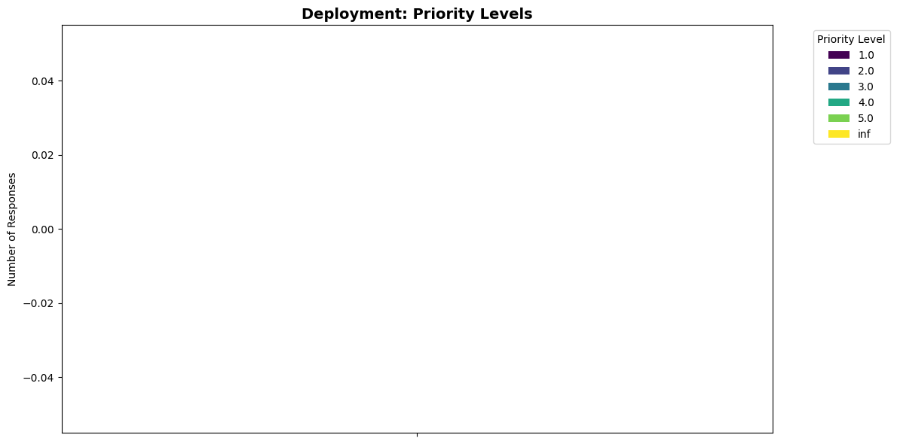
Question #20¶
# Define the relevant question
question_column = "To what extent do you agree with the following statement?\nOpen source ML & AI frameworks and libraries are crucial for ensuring transparency and the reproducibility of AI research and development."
# Check if the column exists in the dataset
if question_column in data.columns:
# Count occurrences of each response
response_counts = data[question_column].value_counts()
# Sort responses in the desired order
response_order = [
"Strongly agree",
"Agree",
"Neither agree nor disagree",
"Disagree",
"Strongly disagree"
]
response_counts = response_counts.reindex(response_order, fill_value=0)
# Plot the bar graph
plt.figure(figsize=(10, 6))
response_counts.plot(kind='bar', color='red')
# Add titles and labels
plt.title("Responses to the Importance of Open Source ML/AI Frameworks", fontsize=14, fontweight="bold")
plt.xlabel("Response", fontsize=12)
plt.ylabel("Number of Respondents", fontsize=12)
plt.xticks(rotation=45, ha='right')
# Annotate the bars
for i, count in enumerate(response_counts):
plt.text(i, count + 0.5, str(count), ha='center', fontsize=10)
# Show the plot
plt.tight_layout()
plt.show()
else:
print(f"Column '{question_column}' not found in the dataset.")
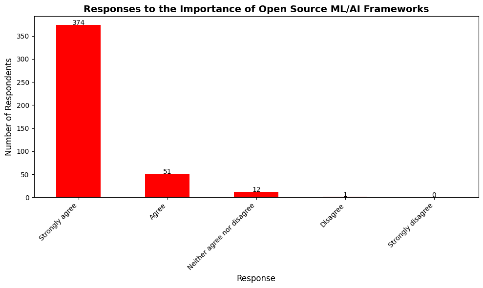